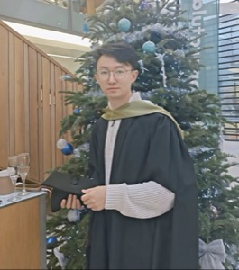

Lecturer (Asst. Prof.) in Machine Learning @ QUB
Director, QUB Machine Learning Lab
贝尔法斯特女王大学 讲师（助理教授）
QUB 机器学习实验室 负责人
I am a Lecturer in Machine Learning at Queen's University Belfast, where I direct the QUB Machine Learning Lab. My research concerns the imperfections machine learning meets in reality. For several years I worked at the model-construction stage, on learning from supervision that is noisy, coarse, or drawn from outside the label space. As foundation models have made intervention at that stage progressively impractical—most deployed models are called rather than built—my focus has moved to the inference stage: how to quantify the risk of a given prediction, and what can still be guaranteed when the evidence used to assess it is itself imperfect.
Prior to joining QUB, I was a Research Fellow in the IIML Group at UCL, collaborating with Prof. Miguel Rodrigues. I received my Ph.D. from QMUL, supervised by Prof. Ioannis Patras and Dr. Georgios Tzimiropoulos, and spent time as an AI4Media Junior Exchange Fellow at the University of Trento with Prof. Nicu Sebe. In summer 2026 I was a Visiting Researcher at the KUIS AI Center, Koç University. I hold a Master's from Tsinghua University (supervised by Prof. Jin Gu), and a Bachelor's from Nankai University.
On a personal note, I grew up in Chizhou, Anhui Province, China—a beautiful small city located near the renowned scenic area of Huangshan (Yellow Mountain).
我是贝尔法斯特女王大学（QUB）机器学习方向的讲师（助理教授），并负责 QUB 机器学习实验室。 我的研究关注机器学习在真实场景中遭遇的各种「不完美」。此前数年，我的工作集中在模型构建阶段——如何从含噪声、粗粒度或超出标签空间的监督信号中学习；随着基础模型的普及，大多数模型只能被调用而非从头训练，我的重心转向推理阶段：如何量化单次预测的风险，以及当用于评估的证据本身并不可靠时，我们还能给出怎样的保证。
加入 QUB 之前，我在 伦敦大学学院（UCL） IIML 组担任研究员（Research Fellow），合作导师为 Miguel Rodrigues 教授。我于 伦敦玛丽女王大学（QMUL） 获得博士学位（导师 Ioannis Patras 教授与 Georgios Tzimiropoulos 博士）；期间曾作为 AI4Media 青年交流学者赴特伦托大学与 Nicu Sebe 教授进行合作研究，并于 2026 年夏访问土耳其科奇大学 KUIS AI 中心。 我于清华大学获得硕士学位（导师古槿），本科毕业于南开大学。
在学术之外，我来自中国安徽省池州市，这是一座风景秀丽的小城，毗邻世界著名的黄山风景区。
PhD students, visiting scholars & interns.
Trustworthy ML, noisy labels, LLM reliability.
Email a CV & research statement.
招收博士生、访问学者与实习生。
方向：可信机器学习 / 噪声标签 / 大模型可靠性。
请附简历与研究陈述。